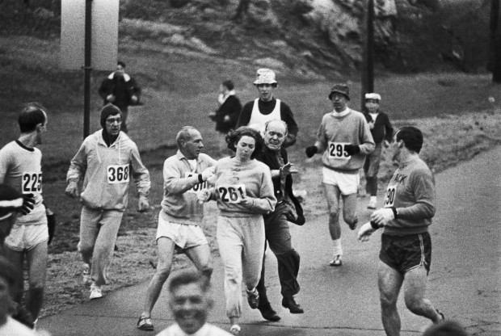
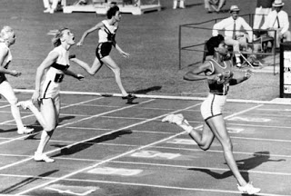

This is Kathrine Switzer. Which marathon did she become the first woman to complete as a registered participant in 1967?

AP Images
Boston Marathon
New York City Marathon
London Marathon
Question 2
This is Wilma Rudolph. Which of these statements describes her accomplishment in the 1960 summer Olympics?

She was the first woman to win four track and field Olympic gold medals.
She was the first African American woman to win an Olympic gold medal
She was the first American woman to win three gold medals during a single Olympics.